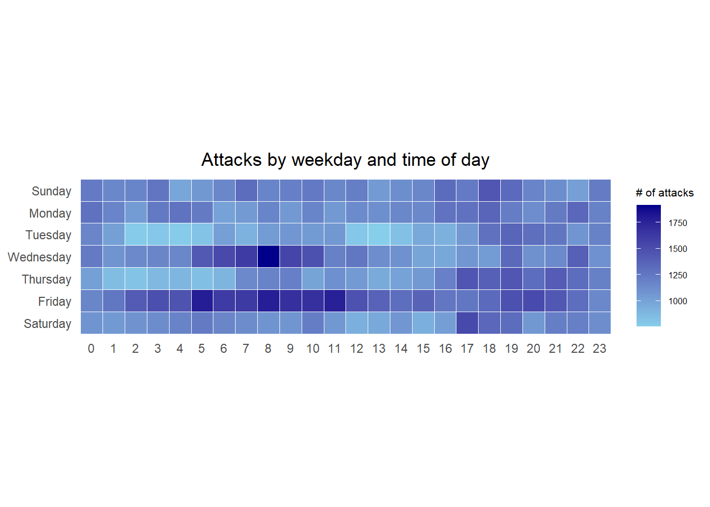
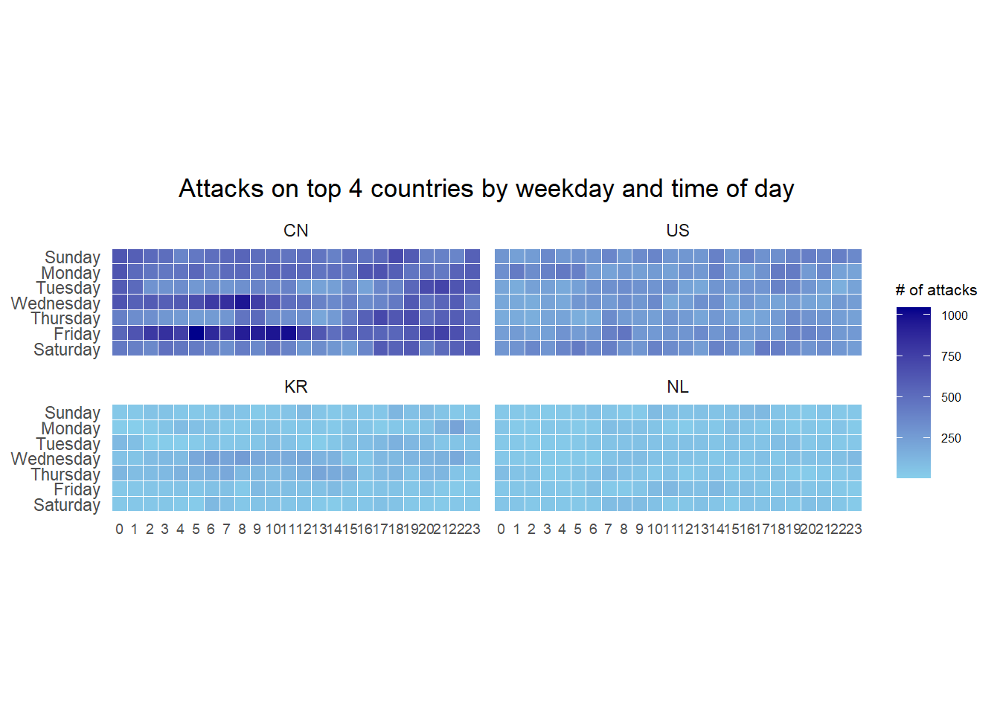
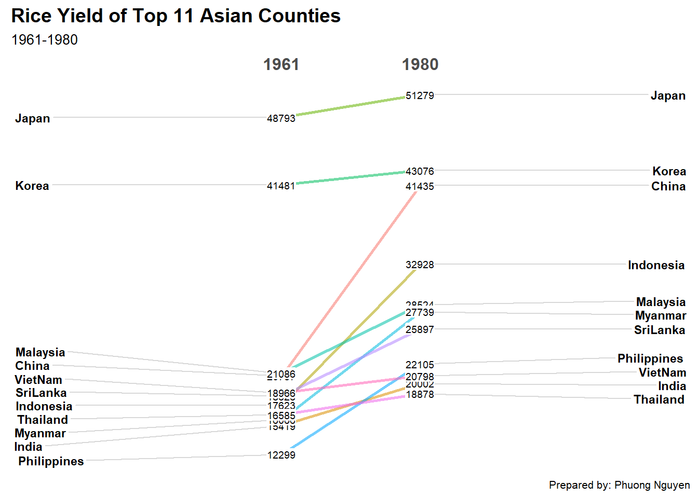

pacman::p_load(scales, viridis, lubridate, ggthemes, gridExtra, readxl, knitr, data.table, CGPfunctions, ggHoriPlot, tidyverse)Hands-on Exercise 7: Visualising and Analysing Time-oriented Data
1 Overview
This exercise provides hands-on experience on the below data visualization:
plot a calendar heatmap using ggplot2 functions,
plot a cycle plot using ggplot2 function,
plot a slopegraph
plot a horizon chart
2 Install R packages
The below code chunks load and install the necessary packages into R environment.
3 Plotting Calendar Heatmap
In this section, we explore how to plot a calender heatmap programmatically using ggplot2.
3.1 The Data
eventlog.csv file will be used for this hands-on exercise. This dataset consists of 199,999 rows of time-series cyber attack records by country.
3.2 Importing the data
The below code chunk imports eventlog.csv into R environment as a tibble dataframe named attack
attacks <- read_csv("data/eventlog.csv")3.3 Examining the data structure
The below code chunk useskable() to review the structure of the imported data frame.
kable(head(attacks))| timestamp | source_country | tz |
|---|---|---|
| 2015-03-12 15:59:16 | CN | Asia/Shanghai |
| 2015-03-12 16:00:48 | FR | Europe/Paris |
| 2015-03-12 16:02:26 | CN | Asia/Shanghai |
| 2015-03-12 16:02:38 | US | America/Chicago |
| 2015-03-12 16:03:22 | CN | Asia/Shanghai |
| 2015-03-12 16:03:45 | CN | Asia/Shanghai |
The output shows there are three columns: timestamp, source_country and tz.
timestamp: stores date-time values in POSIXct format.
source_country: stores the source of the attack in ISO 3166-1 alpha-2 country code.
tz: stores time zone of the source IP address.
3.4 Data Preparation
Step1: Before we can plot the calendar heatmap, the weekday and hour of the day need to be defined. The below code chunk creates these new fields named wkday and hour.
make_hr_wkday <- function(ts, sc, tz) {
real_times <- ymd_hms(ts,
tz = tz[1],
quiet = TRUE)
dt <- data.table(source_country = sc,
wkday = weekdays(real_times),
hour = hour(real_times))
return(dt)
}Note:
weekdays()is a base R function.
Step 2: We derive the attacks tibble dataframe, using mutate() to convert wkday and hour fields into factor so they’ll be ordered when plotting.
wkday_levels <- c('Saturday', 'Friday',
'Thursday', 'Wednesday',
'Tuesday', 'Monday',
'Sunday')
attacks <- attacks %>%
group_by(tz) %>%
do(make_hr_wkday(.$timestamp,
.$source_country,
.$tz)) %>%
ungroup() %>%
mutate(wkday = factor(
wkday, levels = wkday_levels),
hour = factor(
hour, levels = 0:23))The below code output shows the tidy tibble table after processing.
kable(head(attacks))| tz | source_country | wkday | hour |
|---|---|---|---|
| Africa/Cairo | BG | Saturday | 20 |
| Africa/Cairo | TW | Sunday | 6 |
| Africa/Cairo | TW | Sunday | 8 |
| Africa/Cairo | CN | Sunday | 11 |
| Africa/Cairo | US | Sunday | 15 |
| Africa/Cairo | CA | Monday | 11 |
3.5 Building the Calendar Heatmaps
grouped <- attacks %>%
count(wkday, hour) %>%
ungroup() %>%
na.omit()
ggplot(grouped,
aes(hour,
wkday,
fill = n)) +
geom_tile(color = "white",
size = 0.1) +
theme_tufte(base_family = "Helvetica") +
coord_equal() +
scale_fill_gradient(name = "# of attacks",
low = "sky blue",
high = "dark blue") +
labs(x = NULL,
y = NULL,
title = "Attacks by weekday and time of day") +
theme(axis.ticks = element_blank(),
plot.title = element_text(hjust = 0.5),
legend.title = element_text(size = 8),
legend.text = element_text(size = 6) )
Key takeaways from the above code chunk:
Data Aggregation: A tibble called
groupedis created by aggregatingattackoccurrences bywkdayandhour.Count Calculation: A new field
nis generated usinggroup_by()andcount().Handling Missing Values:
na.omit()removes missing data.Tile Plotting:
geom_tile()plots grids at each(x, y)position, withcolorandsizedefining tile borders.Minimalist Theme:
theme_tufte()(from ggthemes) removes unnecessary elements; try commenting it out to see the default plot.Aspect Ratio:
coord_equal()ensures a 1:1 aspect ratio.Color Scaling:
scale_fill_gradient()creates a two-color gradient for visual contrast.
3.6 Building Multiple Calendar Heatmaps
In this section, we explore how to plots multiple heatmaps for the top four countries with the highest number of attacks.
Step 1: Derive attack by country
In order to identify the top 4 countries with the highest number of attacks, we need to count the number of attacks by country and calculate the percent of attacks by country. Finally, save the ordered results in a tibble data frame.
attacks_by_country <- count(
attacks, source_country) %>%
mutate(percent = percent(n/sum(n))) %>%
arrange(desc(n))Step 2: Prepare the tidy data frame
Next we extract the attack records of the top 4 countries from and save the data in a new tibble data frame call top4_attacks.
top4 <- attacks_by_country$source_country[1:4]
top4_attacks <- attacks %>%
filter(source_country %in% top4) %>%
count(source_country, wkday, hour) %>%
ungroup() %>%
mutate(source_country = factor(
source_country, levels = top4)) %>%
na.omit()3.7 Plot Multiple Calendar Heatmaps
Step 3: Finally, we plot the Multiple Calender Heatmap using ggplot2 functions.
ggplot(top4_attacks,
aes(hour,
wkday,
fill = n)) +
geom_tile(color = "white",
size = 0.1) +
theme_tufte(base_family = "Helvetica") +
coord_equal() +
scale_fill_gradient(name = "# of attacks",
low = "sky blue",
high = "dark blue") +
facet_wrap(~source_country, ncol = 2) +
labs(x = NULL, y = NULL,
title = "Attacks on top 4 countries by weekday and time of day") +
theme(axis.ticks = element_blank(),
axis.text.x = element_text(size = 7),
plot.title = element_text(hjust = 0.5),
legend.title = element_text(size = 8),
legend.text = element_text(size = 6) )
4 Plotting Cycle Plot
This section covers creating a cycle plot using ggplot2 to visualize time-series patterns and trends in visitor arrivals from Vietnam.
4.1 Data Import
The code chunk below uses read_excel() to imports arrivals_by_air.xlsx into a tibble data frame called air.
air <- read_excel("data/arrivals_by_air.xlsx")4.2 Deriving month and year fields
Next, two new fields called month and year are derived from Month-Year field.
air$month <- factor(month(air$`Month-Year`),
levels=1:12,
labels=month.abb,
ordered=TRUE)
air$year <- year(ymd(air$`Month-Year`))4.3 Extracting the target country
The below code chunk extracts data for the targeted country
Vietnam <- air %>%
select(`Vietnam`,
month,
year) %>%
filter(year >= 2010)4.4 Computing year average arrivals by month
The code chunk below uses group_by() and summarise() of dplyr to compute average arrivals by month.
hline.data <- Vietnam %>%
group_by(month) %>%
summarise(avgvalue = mean(`Vietnam`))4.5 Plotting the cycle plot
The below code chunk plots the cycle plot.
ggplot() +
geom_line(data=Vietnam,
aes(x=year,
y=`Vietnam`,
group=month),
colour="black") +
geom_hline(aes(yintercept=avgvalue),
data=hline.data,
linetype=6,
colour="red",
size=0.5) +
facet_grid(~month) +
labs(axis.text.x = element_blank(),
title = "Visitor arrivals from Vietnam by air, Jan 2010-Dec 2019") +
xlab("") +
ylab("No. of Visitors") +
theme_tufte(base_family = "Helvetica")
5 Plotting Slopegraph
In this section, we explore how to plot a slopegraph using R.
5.1 Data Import
The below code chunk import rice.csv into R environment
rice <- read_csv("data/rice.csv")5.2 Plotting the slopegraph
The below code chunk below plots a basic slopegraph. For effective visualization sorting, factor() is used to convert the value in Year from numeric to factor.
rice %>%
mutate(Year = factor(Year)) %>%
filter(Year %in% c(1961, 1980)) %>%
newggslopegraph(Year, Yield, Country,
Title = "Rice Yield of Top 11 Asian Counties",
SubTitle = "1961-1980",
Caption = "Prepared by: Phuong Nguyen")